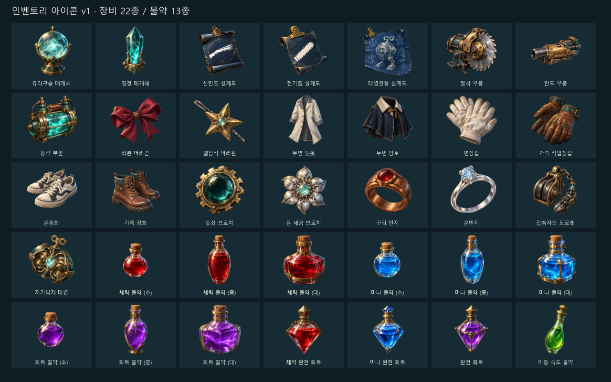
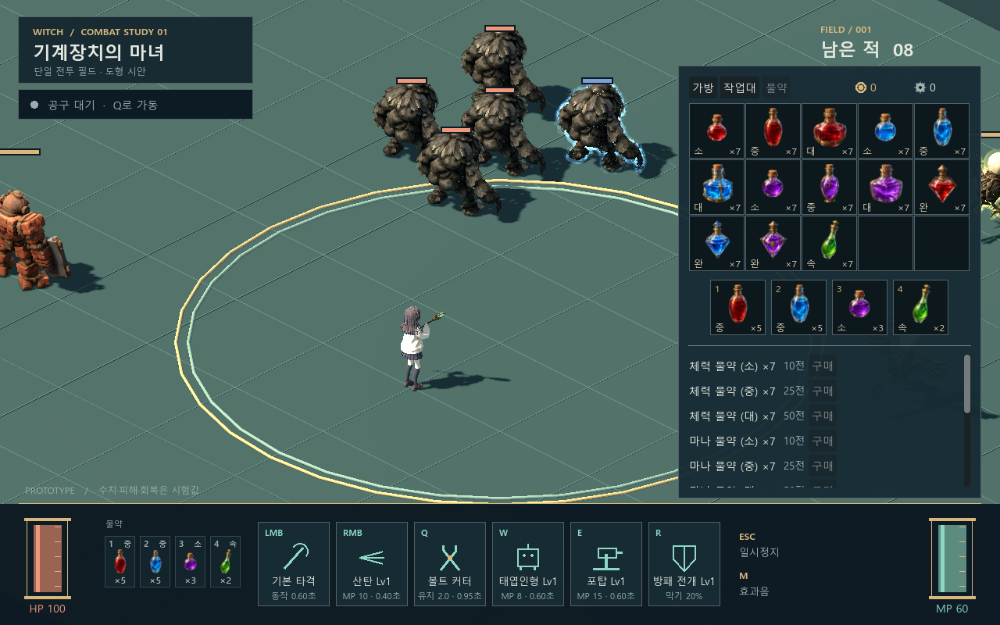
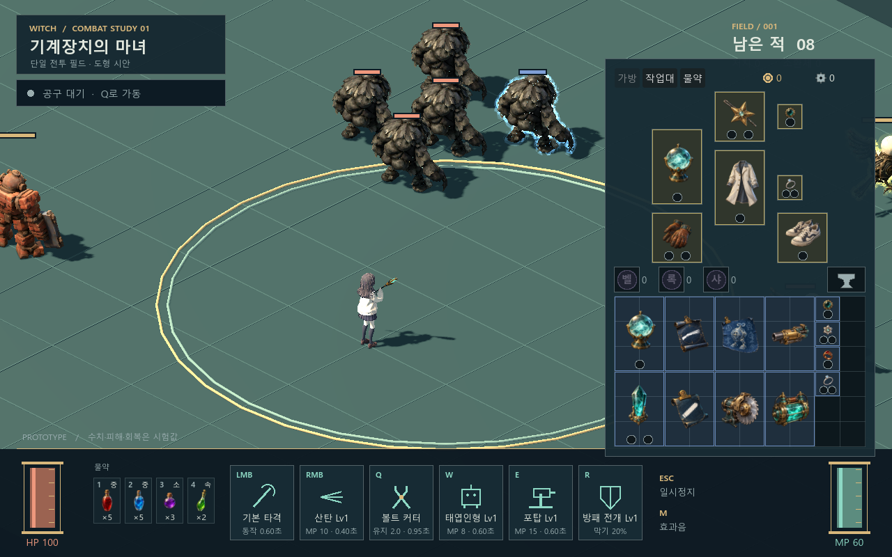
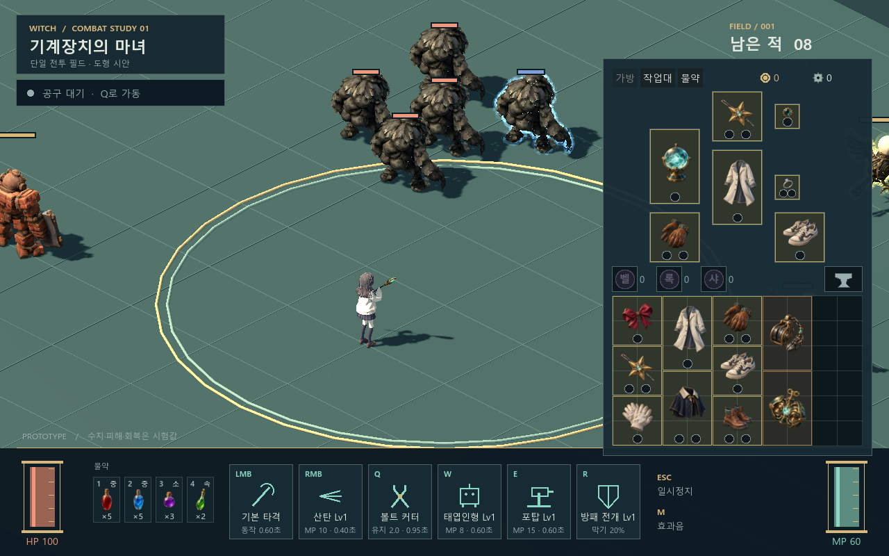

인벤토리 이미지 v1
장비 22종 · 물약 13종. 내장 image_gen으로 생성한 투명 PNG를 실제 가방과 하단 물약 슬롯에 적용했습니다.
축소 필터 보정과 소형 물약 72% 크기를 반영한 현재 화면입니다. 보정 전후 비교
전체 이미지
35종을 같은 크기의 검토 타일에 표시한 이미지입니다.

물약 가방과 퀵슬롯
5×3 가방과 네 퀵슬롯. 종류별 색, 병 모양, 소·중·대·완 표시와 수량을 함께 보여 줍니다.

매개체·설계도·부품·장신구
실제 칸 크기에서 희귀도 테두리와 소켓을 유지합니다.

의류와 고유 아이템

Godot 4.6.2, OpenGL Compatibility, 1280×800. 아이콘 검사 97항목, 물약 가방 43항목, 분해 모드 26항목, 아이템 61항목 통과. 화면은 테스트용 아이템 배치이며 외형은 2026-11-02 사용자가 프로토타입용으로 선택했습니다.